Looking at the warm tanned sunset through my window, I turned on my earphones.Finally, I was done with all my work for the upcoming Spatial Dynamics session. Picking up Language’s Temperature, I sat down on my bed, soothing my senses down. A sudden switch to turn off my worries, I day dream off.

 
